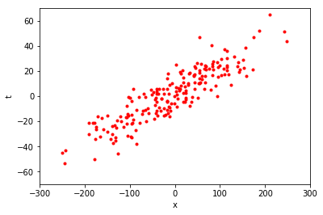
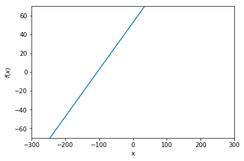
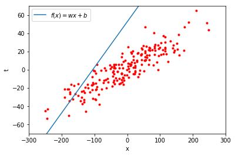
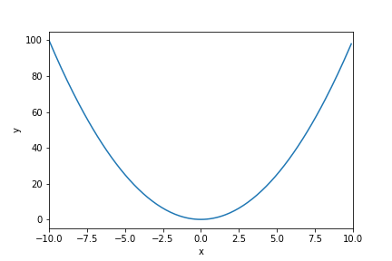

機械学習に使われる数学#
次章より 3 つの章にわたって、ディープラーニングを含む機械学習に必要な数学のうち、基礎的なものとして「微分」「線形代数」「確率統計」の 3 つについて、要点を絞り、簡潔に紹介していきます。
その前に、本章では機械学習 (machine learning) の考え方について大枠を掴み、どの部分でそれぞれの項目が登場するかを把握しておきましょう。
機械学習とは#
機械学習は、与えられたデータから、未知のデータに対しても当てはまる規則やパターンを抽出したり、それらを元に未知のデータを分類したり、予測したりする手法を研究する学術領域です。 機械学習は様々な技術に応用されており、例えば画像認識、音声認識、文書分類、医療診断、迷惑メール検知、商品推薦など、幅広い分野で重要な役割を果たしています。
教師あり学習の考え方#
機械学習の代表的な問題設定として、教師あり学習 (supervised learning) というものがあります。 これは、問題に対して予め答えを用意しておき、予想された答えと実際の答えの違いが小さくなるように訓練を行う方法です。
もう少し具体的に教師あり学習の考え方を説明してみます。 例えば、以下の図のような赤い点の集まりがあったとします。

この図は、横軸が \(x\) 軸、縦軸が \(t\) 軸となっています。 この赤い点の 1 つ 1 つは、\(x\) と \(t\) の値の組を表しています。 図から、\(x = 0\) 付近では \(t\) も \(0\) 付近の値をとることが多いようです。 また、\(x = 200\) 付近では、\(t\) は \(40\) 前後の値をとっているように見えます。 それでは、\(x = -200\) のとき、\(t\) はどのような値をとるでしょうか。
このように、与えられたデータから関係性を予想し、未知のデータに対しても筋の良い見通しを立てることが、教師あり学習の代表的な目標の 1 つです。
直線による近似#
次に、以下のような直線の方程式を考えてみましょう。

これは、1 つの入力 \(x\) を与えると 1 つの出力を返す関数 \(f\) を表していて、この関数は傾き \(w\) と切片 \(b\) の 2 つのパラメータで特徴づけられています。 上の図は、\(w = 0.5\)、\(b = 50\) の場合を表しています。 ここで、初めの図にあった赤い点の集まりに見られる \(x\) と \(t\) の関係を、うまく式 \((2.1)\) の直線によって近似することを考えてみましょう。
この直線をそのまま赤い点の集まりの上におくと、以下のようになります。

あまりうまく \(x\) と \(t\) の関係を表しているようには見えません。
式 \((2.1)\) で表される直線は、\(w\) と \(b\) が決まると、どのような直線になるかが決定されます。 つまり、この \(w\) と \(b\) の値をうまく決定して、赤い点の集まりにできるだけ沿うような直線を見つけることができれば、新しい \(x\) が与えられたときに、\(t\) の値がどのような値になりそうかを予測することができそうです。 このとき、未知のデータに対しても精度良く予測が行えることを汎化性能 (generalizability) が高いと言います。
また、パラメータ \(w\) と \(b\) によって特徴づけられた直線の式 \((2.1)\) のような、パラメータを使って何らかの計算を行うことで、与えられたデータの特徴や関係性を表すものを、以降簡単にモデル (model) と呼ぶことにします[1]。
それでは、\(x\) と \(t\) の関係をよく表すモデルのパラメータ \(w\) と \(b\) は、どうやって決定すればよいのでしょうか。 先程のように、人が赤い点の集まりを目で見て \(x\) と \(t\) の関係に当たりをつけ、最適な \(w\) と \(b\) の値を人手で探り当てるのは、赤い点がもし 3 次元空間や、4 次元、5 次元…といった人間には想像することが難しい高次元空間に散らばっていたら、目で見ることもできないため、困難になります。 そこで、コンピュータにこれらの赤い点のデータを与えて、自動的に最適な \(w\) と \(b\) を探させようというのが、機械学習で行われる代表的な処理のひとつです。
目的関数#
コンピュータに良いパラメータを自動的に見つけてもらうためには、何が良いパラメータなのかという指標を定義する必要があります。 そのような指標を表す関数を目的関数 (objective function) と呼びます。
ここで、上の直線の例に戻って考えてみましょう。 まず、式 \((2.1)\) にある \(x\) を与えると、\(w\) と \(b\) を使って \(wx + b\) という計算が行われます。 その結果を \(y\) と表すことにします。 ここで、\(x\) を入力変数 (input variable)、\(y\) を出力変数 (output variable) と呼びます。 今、上図の赤い点の集まりから 1 点を選び出し、その \(x\) 座標の値を式 \((2.1)\) に与えたとします。 このとき、式 \((2.1)\) に与えられた具体的な \(x\) の値を、入力値 (input value) と呼びます。 そして、パラメータ \(w\) と \(b\) を用いて計算を行った結果得られる具体的な \(y\) の値を、予測値 (predicted value) と呼びます。 このとき、直線の式ではなく、実際の赤い点の持つ \(t\) の値は、この式が予測したい目標の値なので、目標値 (target value) と呼びます。
目的関数は多くの場合、モデルの予測値と目標値を受け取って、その間の差異を測って返すような関数です。 差異は小さければ小さいほどモデルの予測が当たっていることを意味するため、この場合は目的関数の値を最小にするパラメータを見つけ出すのが目的になります。
二乗誤差関数#
目的関数の具体例を挙げます。 例えば、適当に赤い点を 1 つ選び、その \(x\) 座標が \(100\) で、 \(t\) 座標が \(40\) だったとします。 この値を、\(x_1 = 100, t_1 = 40\) のようにおいてみます。 そして、別な点も取り出してきて、同じように座標値 \((x, t)\) を \((x_2, t_2)\) と書くことにします。 同様にして、200 個赤い点を取り出してきたとすると、200 個の \(x\) の値 \(x_1, x_2, \dots, x_{200}\) と \(t_1, t_2, \dots, t_{200}\) が得られます。
この \(x_1, x_2, \dots, x_{200}\) から \(t_1, t_2, \dots, t_{200}\) を予測するのが目標でした。
つまり、\(x_1, x_2, \dots, x_{200}\) が入力値、\(t_1, t_2, \dots, t_{200}\) が目標値です。
そして、この 200 個の \(x\) の値全てに対して、式 \((2.1)\) による予測値 \(y\) を計算した結果、\(y_1, y_2, \dots, y_{200}\) が得られたとします。
このとき、これらの予測値の正確さを、対応する目標値との間の差の二乗によって測るのが、二乗誤差関数 (squared error function) と呼ばれるものです。
具体的には、\(n\) 個目の予測値を \(y_n\)、目標値を \(t_n\) とすると、以下のような関数です。
これは、\(n\) 個目のデータに対する予測値と目標値の差異を表しています。 しかし、ある 1 つのデータに対してだけ予測がうまくいっていたとしても、それ以外のデータに対して全くうまく予測できないのであれば、そのモデルが新しい値に対して正確な予測を行うことは困難であると考えられます。 そこで、200 個のデータ全てに渡って、この二乗誤差を足し合わせ、データ数の 200 で割って平均をとったものを考えます。
\(\sum\) という記号は、総和を表します。 上の式は、\((t_n - y_n)^2\) の値を、\(n = 1\) から順番に \(n = 2, n = 3, \dots, n = 200\) まで計算していき、全てを足し合わせ、\(200\) で割る、ということを意味します。
これは、平均二乗誤差 (mean squared error) と呼ばれ、連続値を予測する回帰問題などでよく用いられる代表的な目的関数の 1 つです。 この関数は、予測値と目標値がすべての \(n\) において完全に一致するときだけ \(0\) になり、それ以外では必ず正の値をとります[2]。 よって、この目的関数の値を最小にする \(w\) と \(b\) が、求めたい最適なパラメータです。 「良いパラメータとは何か」が定量的に定義できたので、次はコンピュータに解を探索させる方法を考えます。
目的関数の最適化#
ある関数を最小にする入力変数の値を求めることを最適化といいます。この最適化をコンピュータで自動的に行うには、どうすれば良いのでしょうか。 例えば、以下のような関数があるとします。 横軸が入力の値、縦軸が出力の値です。

このとき、関数に適当な値をまず入力してみて、得られた値を使ってその値が小さくなりそうな方向に入力を少し動かす、ということを繰り返し行って、関数が最小値をとる入力値を探索する、という方法があります。
機械学習で使われる数学#
このような最適化を行うのに必要になるのが微分 (differential) の知識です。 なぜなら、「入力をどちらに動かせば出力が小さな値になりそうか」ということを知るためには、対象の関数を微分する必要があるからです。詳細は Chainer チュートリアル『4. 微分の基礎』 を参照してください。
また、初めにあげた赤い点の集まりに最もよく沿うような直線を求める問題では、1 つの値を入力して 1 つの値が出力される関数を考えていましたが、複数の値を同時に扱いたいときに必要になるのが、線形代数 (linear algebra) の知識です。
さらに、赤い点がもし本当は直線上にぴったり沿うようなデータであったのに、観測時に何らかの理由でノイズが乗ってしまったがために直線の周辺にばらついて出てきているのだとしたら、そのノイズがどの程度の範囲で値のズレを発生させるものなのか、見当をつけておきたくなるかもしれません。 そういったときに必要になるのが、確率(probability)・統計 (statistics) の知識です。
機械学習を手法レベルから理解するためには、この 3 つの知識が必要になります。